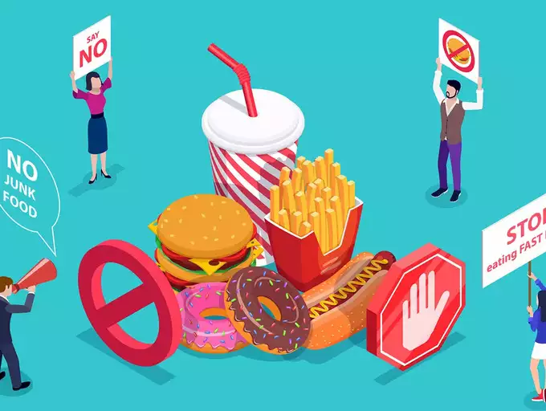

Introduction:
In today's fast-paced world, maintaining good health and fitness has become increasingly important. One crucial aspect of a
healthy lifestyle is understanding the impact of our food choices. While indulging in junk food may seem tempting, it's
essential to recognize the harmful effects it can have on our bodies. This article aims to shed light on the
detrimental nature of certain foods, provide strategies to resist the allure of junk food, and emphasize the significance of prioritizing our health.
The Hidden Dangers of Harmful Foods:
Many processed and convenience foods contain high levels of refined sugars, unhealthy fats, artificial additives, and
preservatives. Such substances can contribute to various health issues,
including:
(a) Obesity: Excessive consumption of calorie-dense, nutrient-poor foods can lead to weight gain, increasing the risk of
obesity and related conditions like heart disease, diabetes, and certain cancers.
(b) Cardiovascular Problems: Foods high in trans fats, sodium, and cholesterol can negatively impact heart health, raising the
chances of hypertension, stroke, and heart disease.
(c) Nutrient Deficiencies: Replacing nutritious meals with processed foods often leads to inadequate intake of essential
vitamins, minerals, and fiber, which are vital for optimal body function.
(d) Increased Inflammation: Some processed foods promote inflammation in the body, which has been linked to various chronic
conditions like arthritis, autoimmune diseases, and digestive disorders.
Strategies to Resist Junk Food Temptations:
Overcoming the allure of junk food can be challenging, but with a mindful approach, it's possible to make healthier choices.
Consider the following strategies:

(a) Plan and Prepare Meals: By planning and preparing nutritious meals in advance, you can reduce reliance on unhealthy fast
food options during busy days.
(b) Opt for Whole Foods: Emphasize fresh fruits, vegetables, whole grains, lean proteins, and healthy fats in your diet. These
provide essential nutrients and help you feel satisfied for longer periods.
(c) Practice Mindful Eating: Slow down, savor each bite, and pay attention to your body's hunger and fullness cues. This
mindful approach can help you make conscious choices and avoid impulsive snacking.
(d) Find Healthy Alternatives: Discover healthier versions of your favorite junk foods or find satisfying substitutes. For
example, opt for air-popped popcorn instead of chips or indulge in homemade fruit sorbet instead of ice cream.
Prioritizing Health: Justifying the Importance:
While it may be tempting to prioritize immediate gratification and indulge in unhealthy foods, it's crucial to remind
ourselves of the long-term benefits of a healthy lifestyle:
(a) Enhanced Energy and Vitality: Nourishing your body with nutritious foods provides sustained energy levels, improved mental clarity, and overall vitality to tackle daily challenges.
(b) Disease Prevention: Making health-conscious choices reduces the risk of developing chronic diseases, allowing you to lead a longer, more fulfilling life.
(c) Improved Physical Fitness: A balanced diet and regular exercise go hand in hand. By prioritizing health, you'll experience improved physical fitness, strength, and endurance.
(d) Emotional Well-being: A healthy diet can positively impact your mood, reducing feelings of fatigue, irritability, and
stress. It promotes mental well-being and fosters a positive self-image.
Conclusion:
While the allure of junk food may be tempting, it's essential to recognize the harmful impact it can have on our health and
well-being. By understanding the dangers associated with harmful foods and employing strategies to resist junk food
temptations, we can prioritize our health. Ultimately, making conscious choices to nourish our bodies with nutritious
foods leads to enhanced energy, disease prevention, improved physical fitness, and emotional well-being. Remember, your
health is your greatest asset, and investing in it is a decision that yields lifelong benefits.